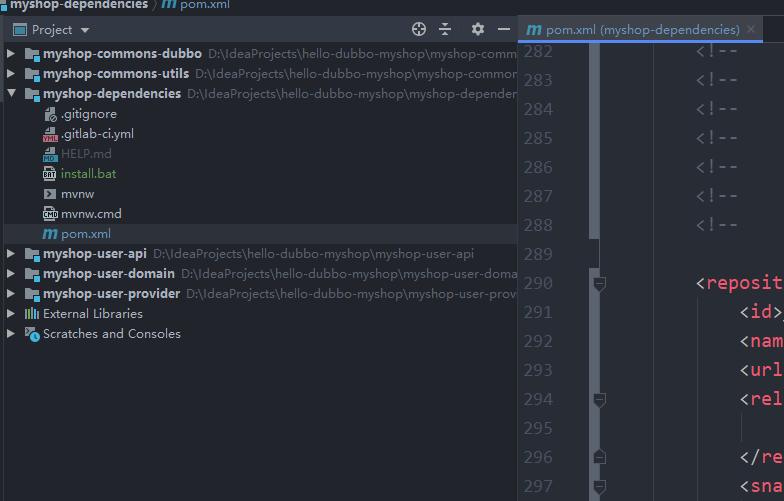

概述
Spring Cloud 项目都是基于 Spring Boot 进行开发，并且都是使用 Maven 做项目管理工具。在实际开发中，我们一般都会创建一个依赖管理项目作为 Maven 的 Parent 项目使用，这样做可以极大的方便我们对 Jar 包版本的统一管理。
我们所有的项目都会依赖这个 myshop-dependencies 项目，整个项目周期中的所有第三方依赖的版本也都由该项目进行管理。
- parent：继承了 Spring Boot 的 Parent，表示我们是一个 Spring Boot 工程
- package：
pom，表示该项目仅当做依赖项目，没有具体的实现代码
spring-cloud-dependencies：在 properties 配置中预定义了版本号为 Hoxton.SR3 ，表示我们的 Spring Cloud 使用的是 H 版- build：配置了项目所需的各种插件
- repositories：配置项目下载依赖时的第三方库
统一依赖管理
dependencies
myshop-dependencies 的pom如下（结构，我把内容删除了）：
1
2
3
4
5
6
7
8
9
10
11
12
13
14
15
16
17
18
19
20
21
22
23
24
25
26
27
28
29
30
31
32
33
34
35
36
37
38
39
40
41
42
43
44
45
46
47
48
49
50
51
52
53
54
55
56
57
58
59
60
61
62
63
64
65
66
67
68
69
70
71
72
73
74
75
76
77
78
79
80
81
82
83
84
85
86
87
88
89
90
| <?xml version="1.0" encoding="UTF-8"?>
<project xmlns="http://maven.apache.org/POM/4.0.0"
xmlns:xsi="http://www.w3.org/2001/XMLSchema-instance"
xsi:schemaLocation="http://maven.apache.org/POM/4.0.0 http://maven.apache.org/xsd/maven-4.0.0.xsd">
<modelVersion>4.0.0</modelVersion>
<parent>
<groupId>org.springframework.boot</groupId>
<artifactId>spring-boot-starter-parent</artifactId>
<version>2.2.5.RELEASE</version>
</parent>
<groupId>top.awslzhang</groupId>
<artifactId>myshop-dependencies</artifactId>
<version>1.0.0-SNAPSHOT</version>
<packaging>pom</packaging>
<url>https://awslzhang.top</url>
<properties>
<java.version>1.8</java.version>
<project.build.sourceEncoding>UTF-8</project.build.sourceEncoding>
<project.reporting.outputEncoding>UTF-8</project.reporting.outputEncoding>
<boot-dubbo.version>0.2.0</boot-dubbo.version>
<boot-mapper.version>2.0.2</boot-mapper.version>
<boot-pagehelper.version>1.2.5</boot-pagehelper.version>
<boot-druid.version>1.1.10</boot-druid.version>
<lombok.version>1.18.12</lombok.version>
<cloud-hystrix.version>2.0.1.RELEASE</cloud-hystrix.version>
<kyro.version>0.42</kyro.version>
<mysql.version>8.0.19</mysql.version>
<fastdfs.version>1.27</fastdfs.version>
<spring-cloud.version>Hoxton.SR3</spring-cloud.version>
<poi.version>4.1.1</poi.version>
</properties>
<dependencyManagement>
</dependencyManagement>
<build>
<plugins>
</plugins>
<pluginManagement>
<plugins>
</plugins>
</pluginManagement>
<resources>
<resource>
<directory>src/main/java</directory>
<excludes>
<exclude>**/*.java</exclude>
</excludes>
</resource>
<resource>
<directory>src/main/resources</directory>
</resource>
</resources>
</build>
<distributionManagement>
</distributionManagement>
<repositories>
</repositories>
<pluginRepositories>
</pluginRepositories>
</project>
|
一个简单的项目，只有一个pom.xml文件，用来管理项目中所需的依赖。
重要的位置
表示该项目仅当做依赖项目，没有具体的实现代码
1
| <packaging>pom</packaging>
|
定义各个依赖的版本号
1
2
3
4
5
6
7
8
9
10
11
12
13
14
15
16
17
18
19
20
21
22
23
24
25
| <properties>
<java.version>1.8</java.version>
<project.build.sourceEncoding>UTF-8</project.build.sourceEncoding>
<project.reporting.outputEncoding>UTF-8</project.reporting.outputEncoding>
<boot-dubbo.version>0.2.0</boot-dubbo.version>
<boot-mapper.version>2.0.2</boot-mapper.version>
<boot-pagehelper.version>1.2.5</boot-pagehelper.version>
<boot-druid.version>1.1.10</boot-druid.version>
<lombok.version>1.18.12</lombok.version>
<cloud-hystrix.version>2.0.1.RELEASE</cloud-hystrix.version>
<kyro.version>0.42</kyro.version>
<mysql.version>8.0.19</mysql.version>
<fastdfs.version>1.27</fastdfs.version>
<spring-cloud.version>Hoxton.SR3</spring-cloud.version>
<poi.version>4.1.1</poi.version>
</properties>
|
管理依赖和插件
1
2
3
4
5
6
7
8
9
10
11
12
13
14
15
16
17
18
19
20
21
22
23
24
25
26
27
28
| <dependencyManagement>
</dependencyManagement>
<build>
<plugins>
</plugins>
<pluginManagement>
<plugins>
</plugins>
</pluginManagement>
<resources>
<resource>
<directory>src/main/java</directory>
<excludes>
<exclude>**/*.java</exclude>
</excludes>
</resource>
<resource>
<directory>src/main/resources</directory>
</resource>
</resources>
</build>
|
被管理的项目
pom：
1
2
3
4
5
6
7
8
9
10
11
12
13
14
15
16
17
18
19
20
21
22
23
24
25
| <?xml version="1.0" encoding="UTF-8"?>
<project xmlns="http://maven.apache.org/POM/4.0.0"
xmlns:xsi="http://www.w3.org/2001/XMLSchema-instance"
xsi:schemaLocation="http://maven.apache.org/POM/4.0.0 https://maven.apache.org/xsd/maven-4.0.0.xsd">
<modelVersion>4.0.0</modelVersion>
<parent>
<groupId>top.awslzhang</groupId>
<artifactId>myshop-dependencies</artifactId>
<version>1.0.0-SNAPSHOT</version>
<relativePath>../myshop-dependencies/pom.xml</relativePath>
</parent>
<artifactId>service-user-api</artifactId>
<name>service-user-api</name>
<packaging>jar</packaging>
<description>Demo project for Spring Boot</description>
<properties>
<java.version>1.8</java.version>
</properties>
<dependencies>
</dependencies>
</project>
|
重点
声明parent为上述pom
项目结构
